Префектура Окинава · Наха · отель
Okinawa Harborview Hotel: полвека «гостевого дома» Окинавы в центре Нахи
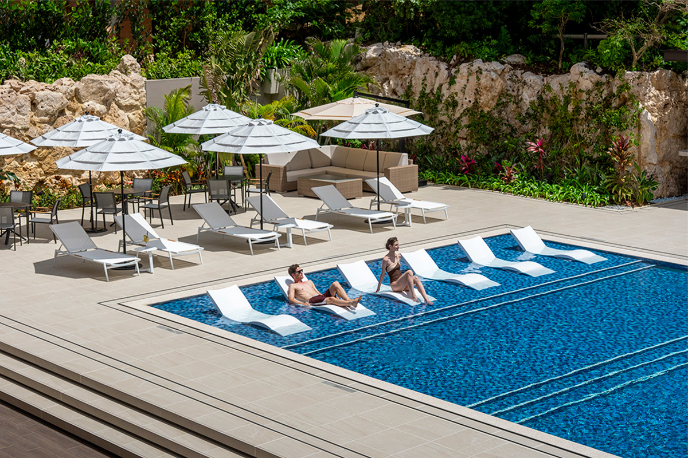
Okinawa Harborview Hotel полвека называют гостевым домом Окинавы: здесь принимали членов императорской семьи и важных гостей из Японии и других стран. К 50-летию отель большей частью обновили, и теперь в нём больше от курорта, чем от городской гостиницы.
История
Красный дом у старого баньяна
Отель стоит в тихом районе Идзумидзаки, чуть в стороне от шумного центра Нахи. По преданию, здесь жил богатый винокур, у которого сакэ не кончалось, как вода в роднике, и место издавна считалось священным.
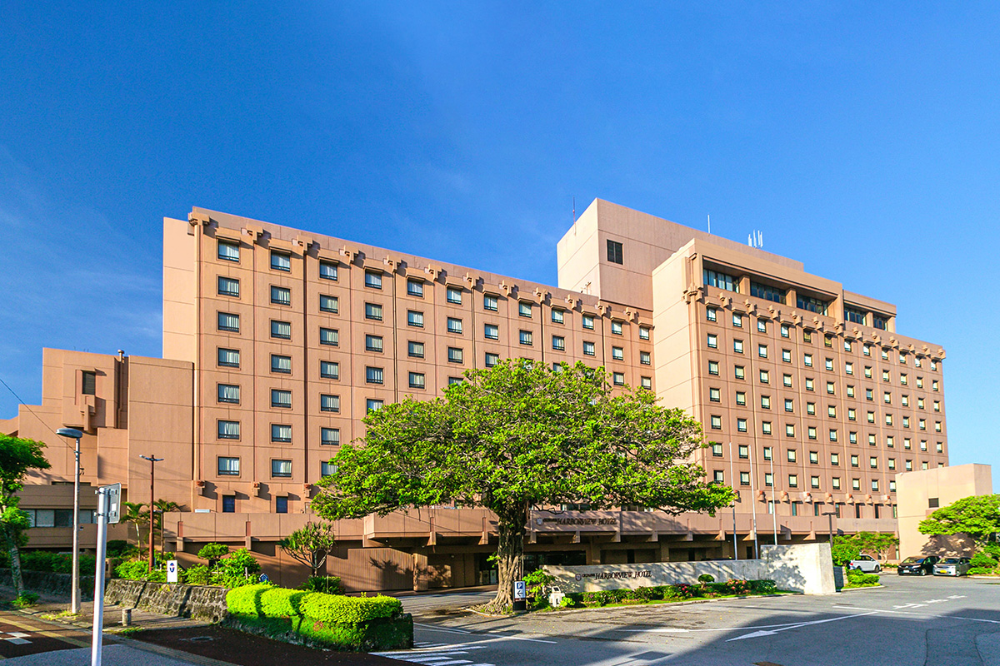
Первым гостя встречает лаунж-бар напротив входа. Сквозь большие окна льётся солнце, за стеклом виден бассейн, и, хотя вокруг город, кажется, что приехал на южный курорт.
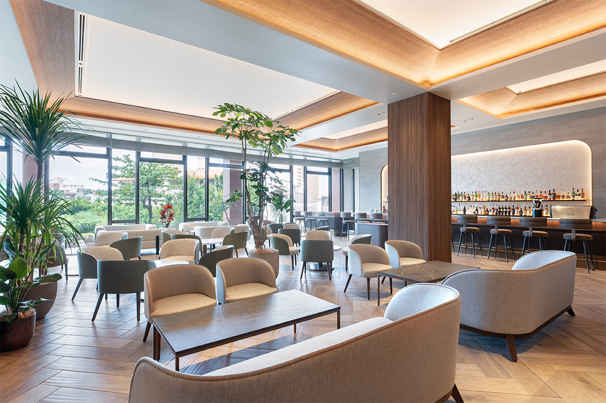
Отель открылся в 1975 году и все эти годы оставался главным местом для официальных приёмов на Окинаве. В 2025 году ему исполнилось 50 лет, и к юбилею провели большую реконструкцию. Её тему сформулировали как «классика и современность»: историю, которую ценят гости разных поколений, сохранили, но сделали отель изящнее, с расчётом на следующие полвека.
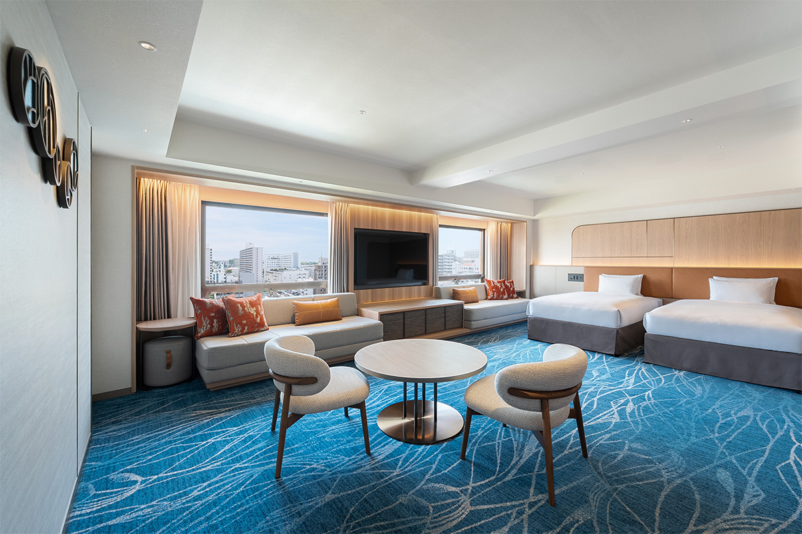
Лаунж
Окинава с утра до полуночи
Главная новинка реконструкции это клубный лаунж для гостей клубных номеров. Он находится на десятом этаже, из окон виден весь город. По размеру это один из самых больших клубных лаунжей в Нахе, и открыт он до полуночи.
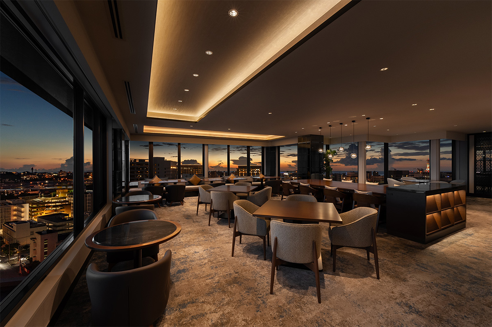
В лаунже четыре разные трапезы в течение дня. Утром полубуфет с выбором из пяти основных блюд, днём послеобеденный чай, а вечером и до ночи подают блюда из окинавских продуктов и местные напитки.
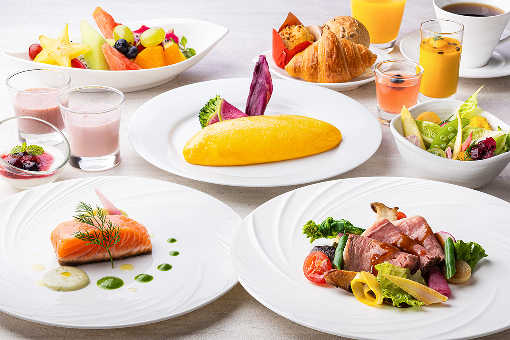
Вечером лаунж превращается почти в бар с видом на ночной город. Выбор напитков большой: окинавский авамори, виски, джин, ром.
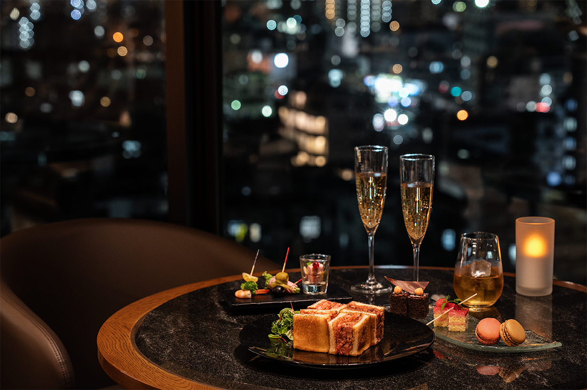
Каждое время суток здесь выглядит и пахнет по-своему, и с утра до ночи можно жить в неспешном «окинавском времени». Такой формат особенно подойдёт тем, кто приезжает ради самого отеля или остаётся на несколько ночей.
Бассейн
Тёплая вода и ночная подсветка
Садовый бассейн для гостей отеля открылся после обновления в июне 2026 года. Вода держится около 30 градусов, поэтому купаться можно круглый год. Вечером бассейн подсвечивают, и днём свежее место ночью становится совсем другим, нарядным и немного таинственным.
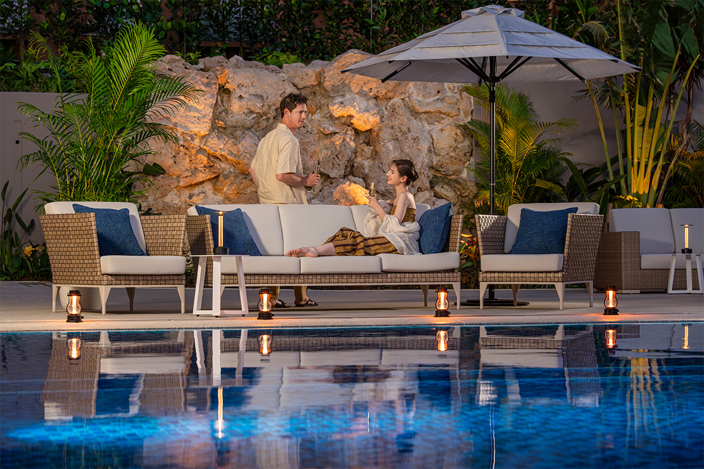
В баре у бассейна готовят еду из местных продуктов, например бургер с тунцом из Нахи, а также окинавские авторские коктейли и безалкогольные моктейли.
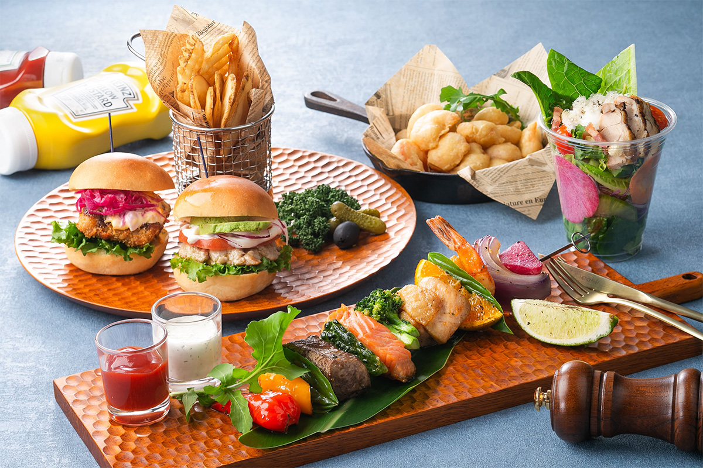
По выходным в золотой час перед закатом играет саксофонист. Небо темнеет, звучит музыка, и такой вечер легко становится главным воспоминанием поездки.
Ужин
«Тэппанъяки Идзумидзаки»: говядина Кобе и дары острова
В отеле три ресторана, и самый интересный из них «Тэппанъяки Идзумидзаки». Он открылся в 2025 году и стал первым среди отелей префектуры рестораном с официальным статусом заведения, где подают говядину Кобе. Здесь жарят на стальной плите говядину Кобе и окинавские марки мраморной говядины, а к ним шеф добавляет местные продукты, которые выбирает сам.
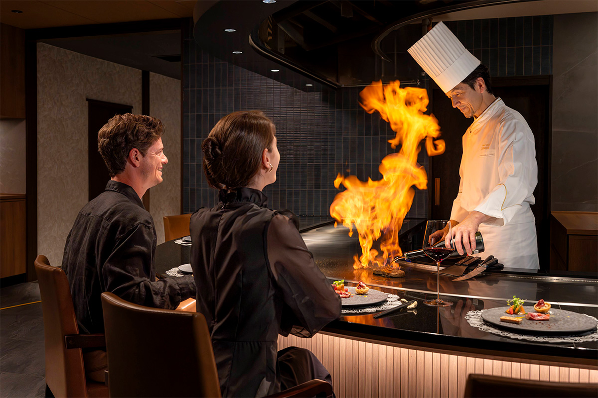
Повар готовит прямо перед гостями, и смотреть на это так же интересно, как есть. Продукты быстро и ловко доводят до готовности, шипение и запах разжигают аппетит, и каждого следующего блюда ждёшь с нетерпением.
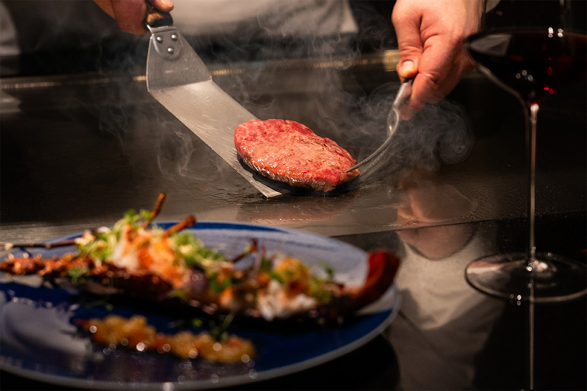
К ужину сомелье подбирает напитки: в карте больше 100 вин и много другого алкоголя, и к каждому блюду предлагают свой бокал. Сочетание блюд и вина и внимание шефа, который для каждой пары гостей рассказывает о продуктах, делают ужин особенным. Ресторан открыт не только для гостей отеля, так что сюда можно прийти на праздничный ужин.
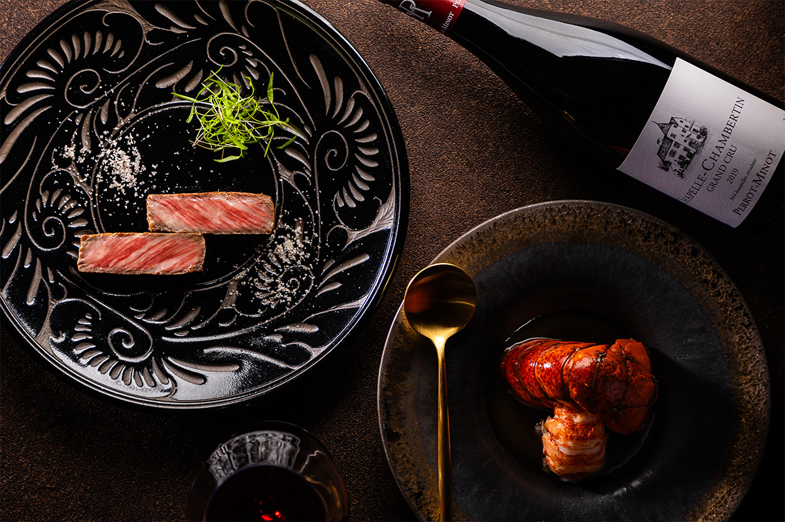
Okinawa Harborview Hotel стоит в центре Нахи, но шум города сюда почти не доходит. Достоинство гостевого дома, которое отель хранит полвека, здесь соседствует с тем новым, что появилось к его юбилею.
Okinawa Harborview Hotel
- Адрес
- префектура Окинава, Наха, Идзумидзаки, 2-46
- Телефон
- +81 98-853-2111
- Номера
- 352. Ночь с завтраком в номере Club Deluxe Twin 31 140 иен с налогами и сбором за обслуживание (2026 год)
- Заезд / выезд
- 14:00 / 11:00
- Как добраться
- от аэропорта Наха около 15 минут на машине или около 20 минут на рейсовом автобусе; от станций Цубогава и Асахибаси монорельса около 10 минут пешком
- Сайт
- oka-hvh.com